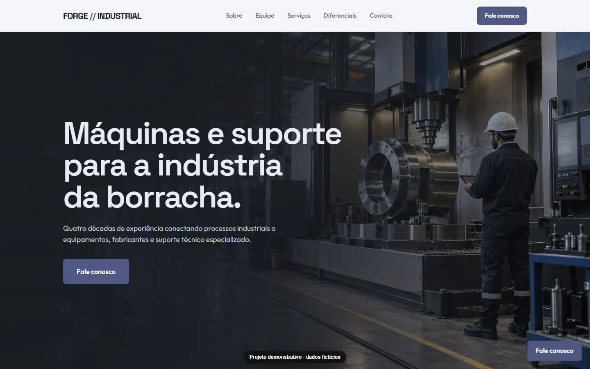
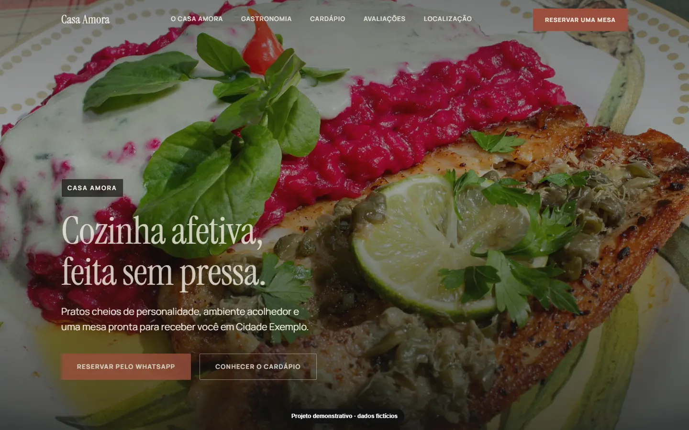
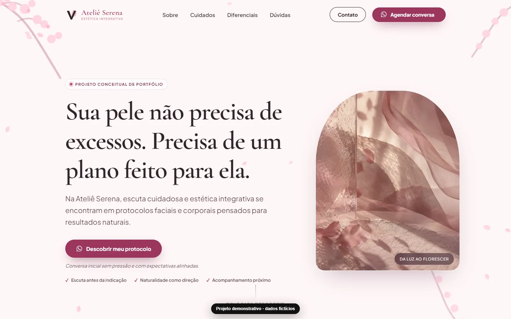
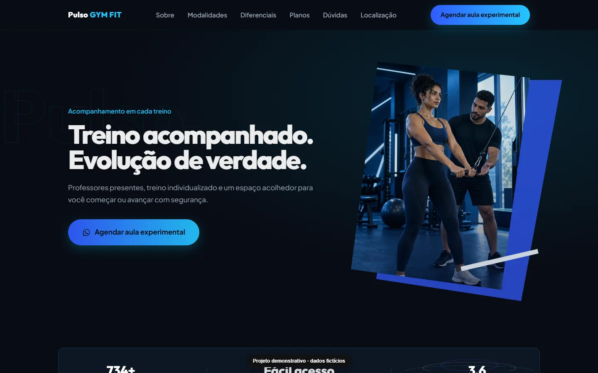
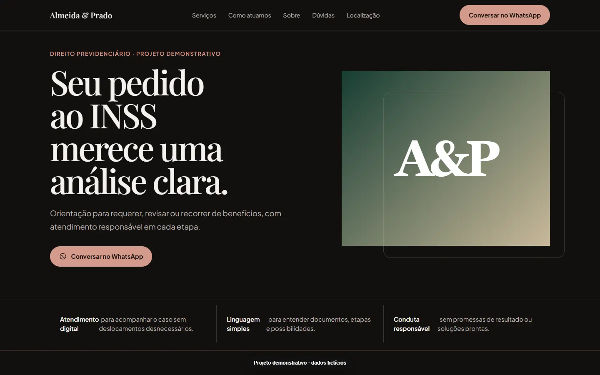

Sites
Estratégia, conteúdo, interface e desenvolvimento responsivo.
DESIGN · DESENVOLVIMENTO · AUTOMAÇÃO
Sites com personalidade, dados que orientam e automações que liberam tempo. Cada solução começa no problema real — não na ferramenta.
Caieiras · São Paulo · Brasil
PROJETOS SELECIONADOS
As demos abaixo preservam a direção criativa de cada projeto e usam marcas, contatos e dados totalmente fictícios.
Catálogo técnico com presença forte, leitura rápida e jornada comercial objetiva para um fabricante de equipamentos industriais.

Uma experiência editorial e acolhedora para um bistrô autoral, com menu, atmosfera e reservas conduzidos sem perder leveza.

Elegância silenciosa e informação responsável para apresentar protocolos de cuidado sem exageros ou promessas irreais.

Ritmo, contraste e chamadas diretas para uma academia de bairro transformar curiosidade em aula experimental.

Uma presença confiável e acessível para advocacia previdenciária, com linguagem simples e caminhos de contato bem definidos.

ALÉM DA INTERFACE
Estratégia, conteúdo, interface e desenvolvimento responsivo.
Power BI, Power Query e modelos para decisões mais claras.
Fluxos e aplicações que reduzem tarefas repetitivas.
Visão de engenharia para conectar necessidade e tecnologia.
 ENGENHARIA + TECNOLOGIA
ENGENHARIA + TECNOLOGIASOBRE
Sou Guilherme Garcia Liziero, engenheiro de formação e profissional de tecnologia e transformação digital.
Minha experiência com processos, dados, automação e digitalização moldou uma forma direta de trabalhar: entender o contexto, organizar o problema e só então escolher a tecnologia certa.
VAMOS CONSTRUIR ALGO ÚTIL
Conte o que precisa mudar no seu negócio ou processo. Eu ajudo a transformar isso em uma solução clara e possível.
Iniciar conversa ↗